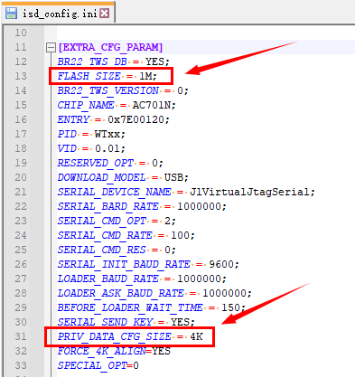
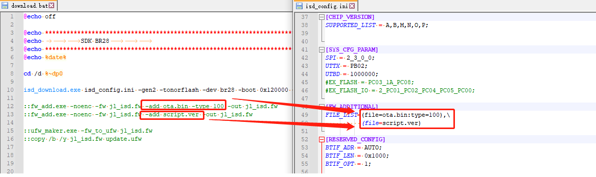

5.1. SDK修改
如果SDK需要支持私有数据授权，请按以下说明更新SDK。
5.1.1. 工具更新
SDK需要支持私有数据授权，相关工具需要更新到以下版本(或之后版本)。
工具 |
最低版本 |
说明 |
|---|---|---|
isd_download.exe |
4.2.54 |
|
一拖二烧录器 |
2.27.7 |
|
一拖八烧录器 |
3.1.22 |
5.1.2. isd_config.ini文件修改
Important
如果您当前使用的SDK中的isd_config.ini是由isd_config_rule.c文件生成，那么请修改isd_config_rule.c生成配置数据
在isd_config.ini的
EXTRA_CFG_PARAM配置段中增加以下配置FLASH_SIZE：FLASH容量大小请填写方案开发者使用芯片FLASH实际大小
PRIV_DATA_CFG_SIZE：私有授权数据需要占用大小，配置的大小需要是4K的整数倍Note
[EXTRA_CFG_PARAM]
FLASH_SIZE=1M
PRIV_DATA_CFG_SIZE=4K如下图：

5.1.3. download.bat文件修改
Important
如果您正在开发的SDK中的download.bat是由download.c文件生成，那么请修改download.c生成download.bat
Important
启用私有数据授权后，固件文件系统格式将升级为新格式。
fw_add.exe/ufw_maker.exe将无法识别的。
如果download.bat是通过fw_add.exe/ufw_maker.exe生成最终的FW/UFW文件，
那么需要删除download.bat中的fw_add.exe/ufw_maker.exe相关语句。
删除fw_add.exe/ufw_maker.exe相关语句后，在isd_download.exe后增加-output-fw和-output-ufw参数，生成最终的FW/UFW文件。
如下图：

如果当前SDK有通过fw_add.exe将文件添加到FW文件中，请修改为isd_config.ini的方式将文件添加到FW中。如下图：

Note
[FW_ADDITIONAL]
FILE_LIST=(file=ota.bin:type=100),\
(file=script.ver)